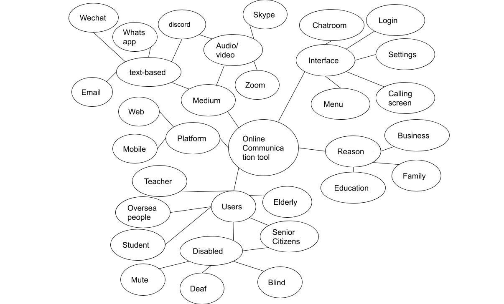
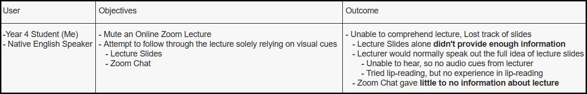
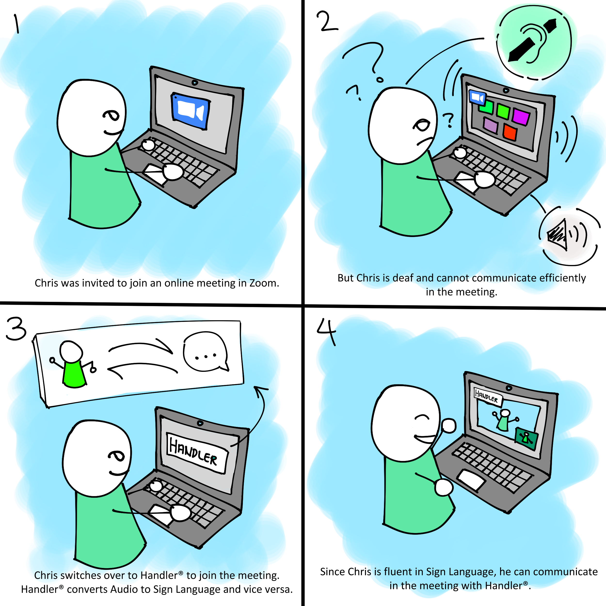
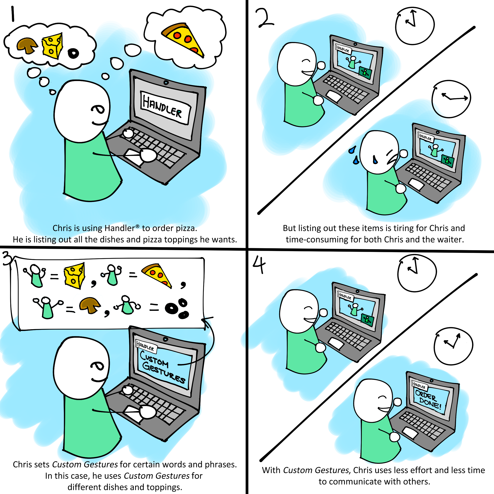
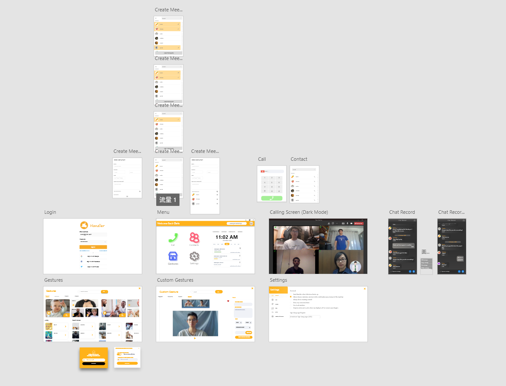

Project I
Design a Customized Online Communication Application and Experiences
For our first COMP 4461 Project, we were tasked to create an online communication application for a certain target audience of our choice.
As technology continues to advance, Online Communication has practically turned into a basic necessity in our daily lives. Our dire situation in 2020 has further proved this point, where social distancing and online schooling and communication has become the norm. Although Online Communication is more accessible to the general public, there is a certain group of people that are seemingly left out; namely, the hearing impaired.
Because of this, we decided to develop an online communication platform for the hearing impaired, called Handler.
What is Handler?
Handler is an online communication software/ platform that allows Sign Language as a medium of communication, as both an input method and output method. Different variants of Sign Language such as American Sign Language (ASL), British Sign Language (BSL) and Japanese Sign Language (JSL) are available.
This exclusive feature makes Handler a suitable choice of online communication for the hearing impaired. People out of our target audience would also find this platform useful for communicating with the hearing impaired, and educational as a platform to learn Sign Language with a community.
Empathize
In our first Mozilla Hubs Meeting, we discussed about various potential target groups that would need more support in using online communication platforms.
Targets in our list included the elderly, the gaming community and the disabled. During the meeting, we noticed that online communication platforms in the market provided insufficient support and aid towards the hearing impaired community. Also, the hearing impaired branches out to different communities, like the elderly and even the youth.
From our analysis, we decided to assign our target group on the deaf, mute and the hearing impaired.

Interpret
To further understand our target group, we've conducted extensive research on the target group's needs. We have also done a Constructive Point-of-View (POV) experiment to fully grasp the experiences and struggles the hearing impaired face in a daily basis. Our experiment involved us muting a live Zoom lecture video so as to imitate the hearing impaired, and to see how much of the lecture we could understand solely on visual cues (e.g. the lecture slides and the Zoom Chat).
However, we were unable to understand the lecture slides based solely on visual cues. The lecture slides alone was not enough to understand the full context of the lecture, as the lecturer would often explain the entire picture through speech. Also, barely anything was typed in the Zoom chat, meaning less information for us to comprehend.

We also realized that even if there were available text, it is possible that the hearing impaired still won't be able to understand anything, due to the possible language barrier between the hearing impaired and others. (e.g. Hearing Impaired who only understands Sign Language and Chinese vs. Others that only understand English) Studies also show that people with hearing loss are more likely to be illeterate as compared to those with normal hearing capabilities (Source). It would also be inconvenient to constantly communicate with text, be it by typing or writing down. Sign Language would be more convenient as a communication medium.
This experiment did not only shed more light into the needs of our target group, but also gave us a new perspective on the hearing impaired community.
Ideate
With new profound knowledge and understanding on our target group, we began on formulating several possible solutions to tackling the communication issue our target group experiences. Here are the 5 ideas we came up with:
Leap Motion
Leap Motion would look like a viable choice since it can accurately track hand and finger gestures with no need for physical contact. However, the technology is still quite pricey and not everyone would be able to freely purchase one.
Motion Tracking Gloves
Motion Tracking Gloves, like the Leap Motion, can easily track hand and finger gestures. Plus, it would be more accurate then the Leap Motion. However, this technology is just as expensive and wouldn't be available for everyone. Also, the gloves could easily get dirty and could even be uncomfortable for some to wear.
Mobile Application
While a Mobile Application would prove useful for communicating on the go, it would be impractical to perform Sign Language with just one hand (i.e. One hand holds up phone, the other hand performs Sign Language.) Although it is possible, the vocabulary conveyed with be seriously limited and the effort to communicate would be higher.
Plugins for Available Online Communication Platforms
It would much easier to create a small plugin for existing communication softwares such as Zoom and Skype. However, it would be hard to form an agreement with the company. Also, since we would need to follow through the company's regulations and system, the amount of control we'd have over the plugin would be limited, thus lessening the amount of support we can provide.
Standalone Desktop Software w/ Motion Tracking via Camera
The software keeps track of user hand movements from the camera. The software can convert sign language to audio and vice versa with Artificial Intelligence (AI). Since we would be developing our own software, we would have more control and freedom over the overall system and won't be held back from foreign company policies and systems. From here, we developed a software called Handler.
Storyboard
These comics/illustrations will demonstrate our software functions and how users could use this software.
Sign Language to Text Converter

Custom Sign Language

Prototype Video Demonstration
Prototype Illustration
We made use of Adobe XD to create the User Interface of Handler.

Reflection
From this project, I was able to understand how User Interface (UI) Design could make or break a product. This makes the prototyping procedure towards product development cruical. I also obtained indispensable hands-on knowledge and experience, on how to use various softwares to make Handler come to life, such as Adobe XD (for developing Handler's UI) and Davinci Resolve (For video editing). Apart from the technical skills, I also learnt more about team communication and leadership.
References
From this project, I was able to understand how User Interface (UI) Design could make or break a product. I now know that the little details in the software's UI can play a large role in the overall appearance and user-friendliness. This makes the prototyping procedure towards product development crucial. I also obtained indispensable hands-on knowledge and experience, on how to use various softwares to make Handler come to life, such as Adobe XD (for developing Handler's UI) and Davinci Resolve (For video editing). Apart from the technical skills, I also learnt more about team communication and leadership.